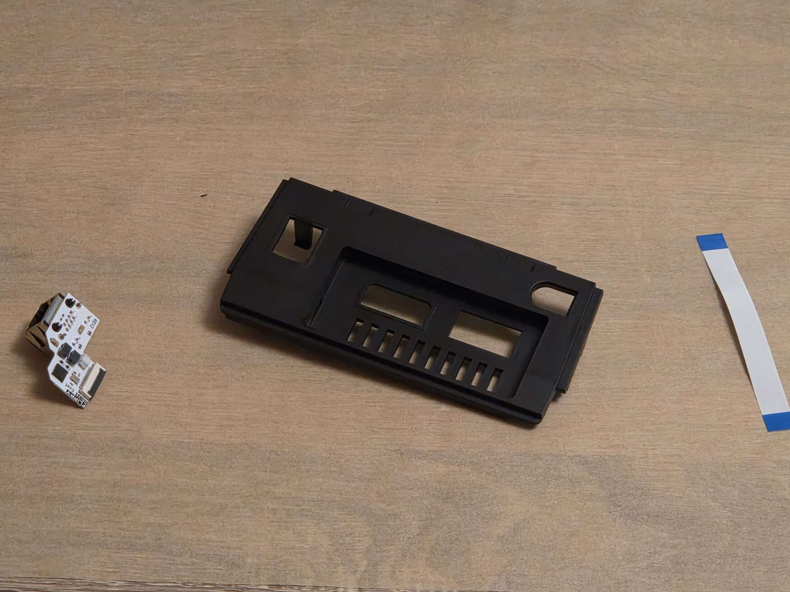
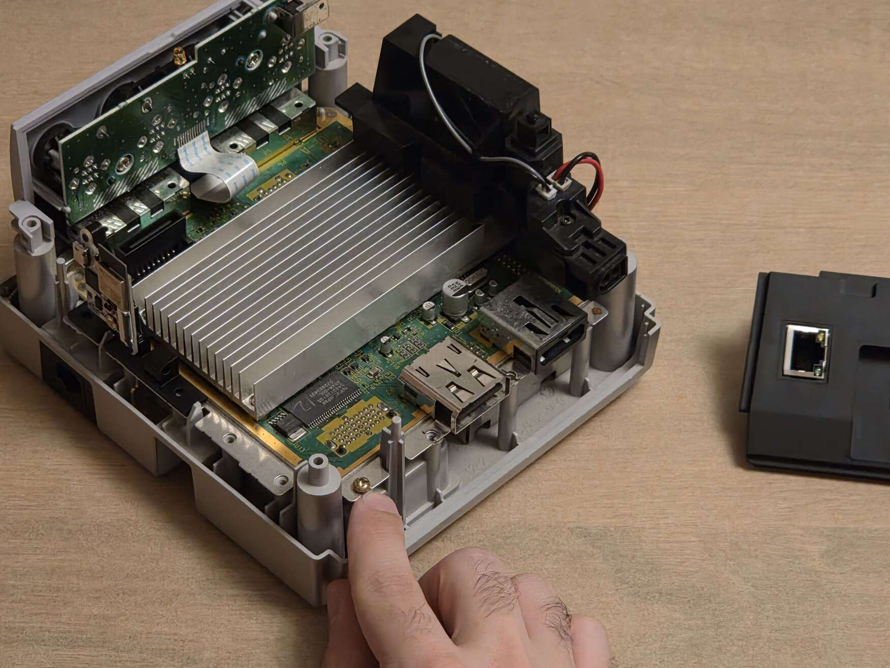
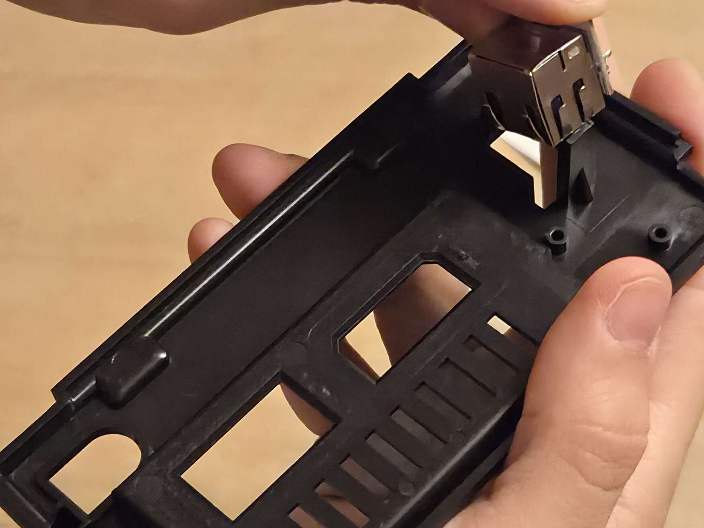
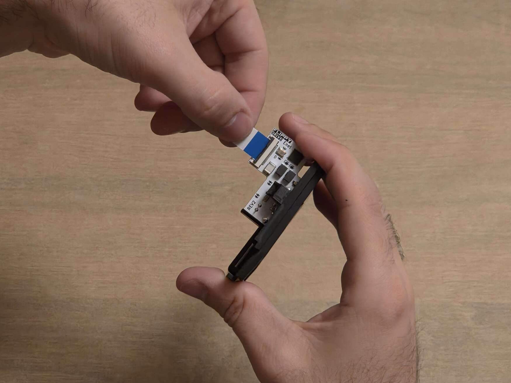
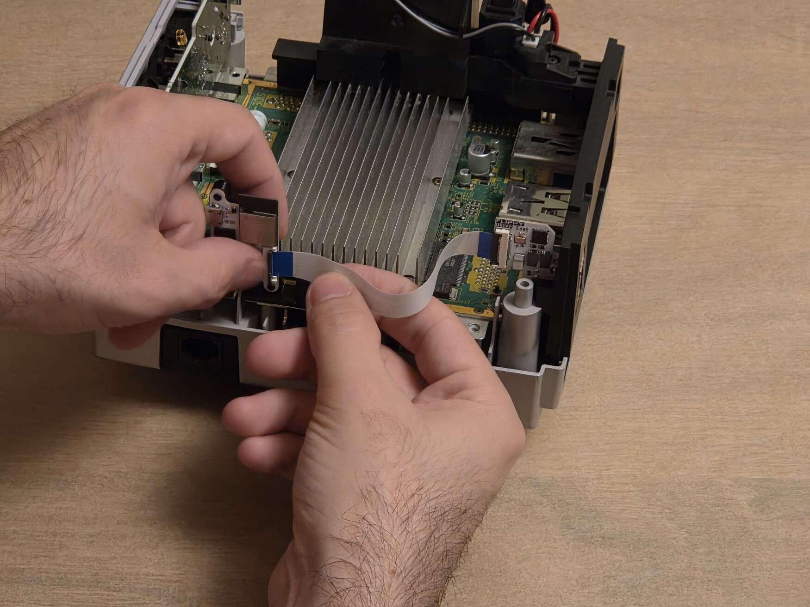

FlippyDrive Ethernet¶
Caution
2025-06-01: This guide is not 100% complete yet.
Things Required¶
{kind=link}
10-15 Minutes
FlippyDrive Ethernet kit (Ethernet expansion PCB, ribbon cable, rear I/O panel (‘back plate’))
4.5mm Gamebit screwdriver
#0 Phillips screwdriver
#1 Phillips screwdriver (optional)
#2 Phillips screwdriver
Step 0: Install the FlippyDrive¶
If you haven’t already installed the FlippyDrive, follow the installation guide here.
Step 1: Remove screw¶
For the Ethernet add-on to fit inside the GameCube below the lid switch, it’s required to remove one screw.
Using a #0 Phillips, remove the leftmost screw on the back side of the GameCube, below the lid switch. There is no space in the rear I/O panel to hold this screw, please store it somewhere safe or tape it to the inside of the rear I/O panel.
Step 2: Assemble Ethernet add-on¶
Grab the supplied rear I/O panel and the Ethernet board (PCB).
To insert the Ethernet add-on into the rear I/O panel, position the PCB with the flex cable connector facing upward, with the logo facing away from the GameCube A/V ports. Viewing from the back, the lights on the ethernet port should be on the RIGHT.
The process of inserting the ethernet add-on PCB / getting the module past the two clamps can be a bit finicky. It helps to use the side of the metal Ethernet port to push the black holding clamps away.
Need help with installation?
See the Troubleshooting section for more tips or join the Discord link through there while the documentation is being finalized.
Step 3: Insert rear I/O panel¶
Now that the PCB has been inserted into the rear I/O panel, insert the rear I/O panel into the GameCube. Assuming you haven’t screwed the rest of the screws in (except for the three during the FlippyDrive install, those don’t need to be removed), it might be necessary to push the disc drive up slightly to be able to position the Ethernet add-on under the lid switch.
Hint
If you’re upgrading your existing FlippyDrive install, it isn’t necessary to unscrew all screws. Loosen all screws one revolution (360 degrees) counter-clockwise underneath the back, fan side (including the screws underneath the fan) and FlippyDrive side (except for the two holding the FlippyDrive bracket) so that you have just enough leeway in the back to slightly push the corner of the disc drive up. Then, tighten the screws again.
Step 3: Connect ribbon cable¶
Connect the ribbon cable to the extension port on the FlippyDrive and the Ethernet board:
Inspect the Ethernet add-on and the FlippyDrive extension port. Check both ribbon cable connector locking tabs and make sure they are in the unlocked/up position.
Insert the ribbon cable, with the blue side of the ribbon cable facing up on both sides.
Inserting it into the flex cable connectors might require a little bit of force, DO NOT use excessive force or you might damage the connector.
Danger
When closing the black flex locking tab, push it closed from the center, ideally with your whole thumb. DO NOT push it closed from one edge. YOU WILL BREAK IT if you try closing the tab unevenly.
When locked, the black locking tab will be flush with the body of the connector. Make sure that the ribbon cable is inserted straight into the connector, not at a slight angle.
Step 4: Verify Installation¶
Connect the GameCube to a display and power on the GameCube. If everything works, you should be able to ping the FlippyDrive from a computer. (hostname: flippydrive)
Todo
Add section how to verify installation through the bootloader menu
Need help?
See the Troubleshooting section for more tips.
Step 5: Reassemble GameCube¶
Follow the instructions in Step 1 of the FlippyDrive installation guide in reverse without the screw that was removed in Step 2. While putting the lid back on (with the lid open!), make sure to gently push the ribbon cable underneath the side wall carefully.
Danger
Make sure your disc lid is open before reassembly. Attaching it when closed can damage the door cover switch.